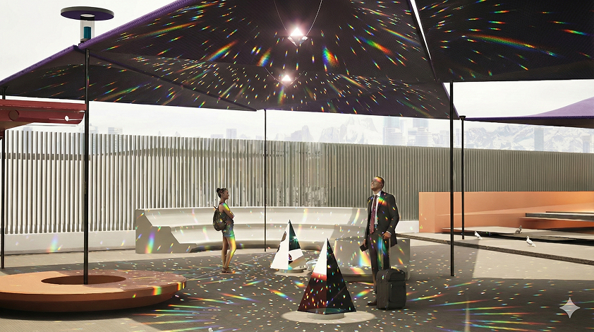
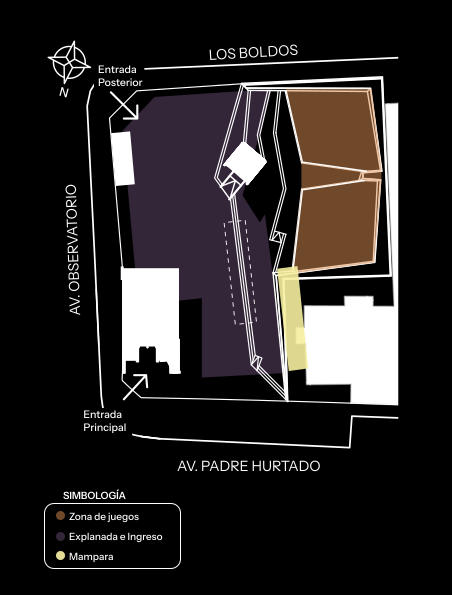
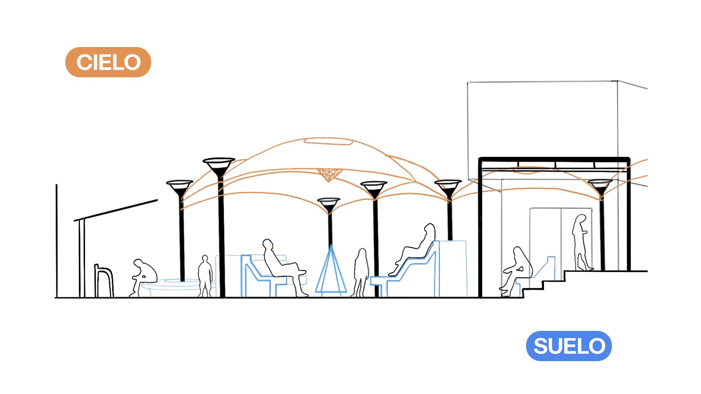
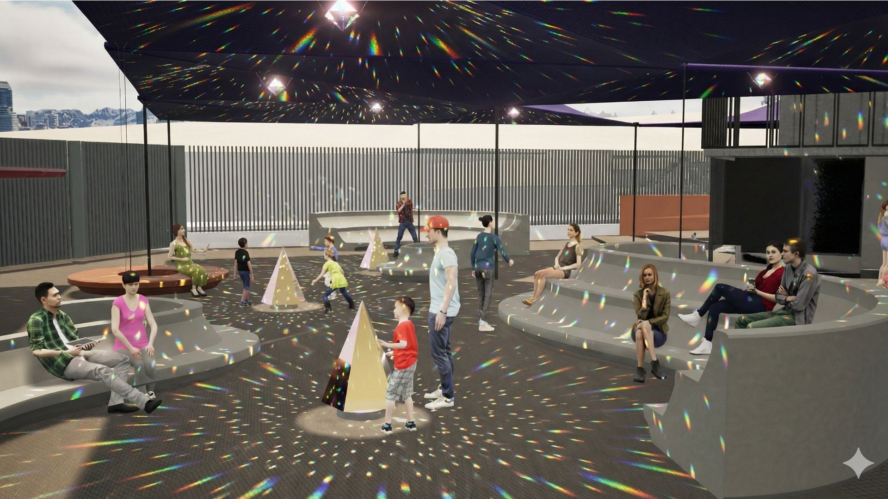
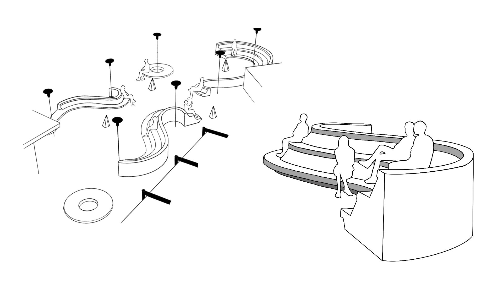
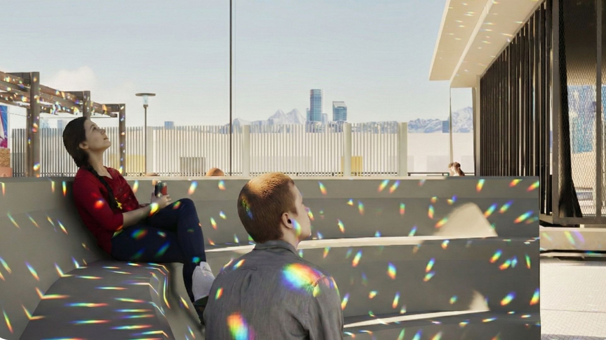

Escenario observatorio
Proyecto de intervención urbana desarrollado junto a la Municipalidad de El Bosque y Metro de Santiago, que busca activar la explanada exterior del Metro Observatorio, transformando un espacio identificado como no lugar en un área de permanencia y encuentro comunitario. La propuesta se inspira en la identidad astronómica del sector y en la alta exposición solar del lugar, incorporando estructuras tensadas que generan sombra y un hito central suspendido que refracta la luz, evocando fenómenos astronómicos y aportando una dimensión sensorial y educativa al espacio.
Rol: Modelado 3D del proyecto y elaboración de maqueta física.





